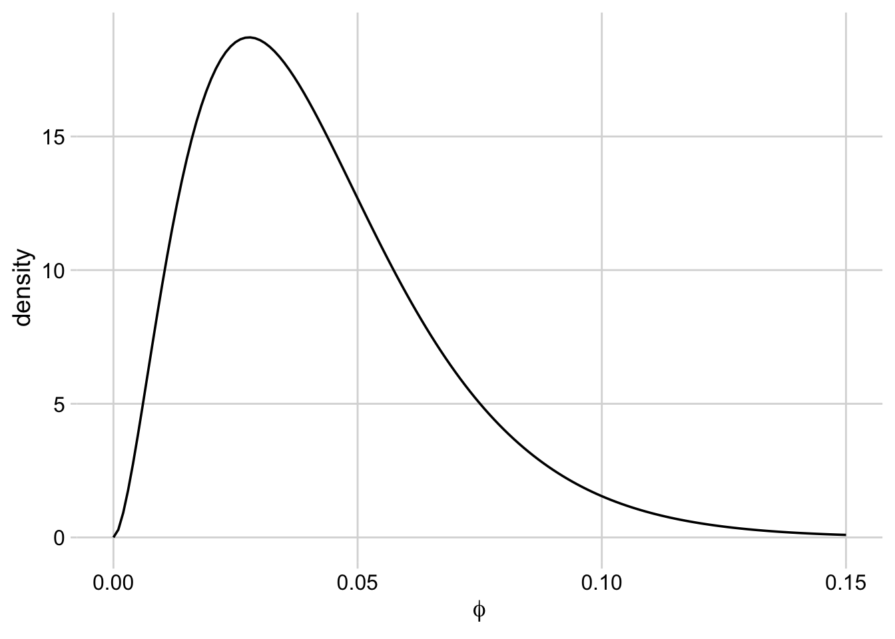

Informative Prior Distributions
Goal
To generate prior distributions for all the parameters in the house finch + Mycoplasma model, informative ones based on the literature when possible, vague/uninformative when impossible.
Demographic Parameters
These are all the parameters that relate to the demography of the house finch in the absence of Mycoplasma infection.
Allee effect
There is a widely accepted argument that house finches are subject to an Allee effect, as it explains some of their invasion dynamics (Veit and Lewis 1996), but no one really knows how strong that Allee effect is. I will just have to use a vague prior here.
Population density
I have some estimates of finch density taken from parks. I have no idea how well these scale up.
Mortality (juvenile, winter)
I have only one good data source on the survivorship of juveniles over their first winter (Milby and Wright 1976). I will generate a beta distribution based on this estimate and its uncertainty.
[1] 3.962104[1] 2.228683
I am a little concerned that this is overconfident given that this estimate is based on mark-recapture of 10 juveniles, but it is the only data source I have, and I feel like pretending I know nothing about juvenile overwinter survival would be dishonest.
Mortality (adult, winter)
I have a few sources for adult survivorship:
# A tibble: 5 × 3
phi N source
<dbl> <dbl> <chr>
1 0.719 34 Milby and Wright 1976
2 0.405 535 Birds of the World
3 0.468 263 Birds of the World
4 0.574 291 Birds of the World
5 0.577 1245 Birds of the World I will calculate the mean and variance of survivorship from these studies, weighted by the sample size, to make a beta distribution.

Mortality (adult, summer)
It seems to be taken as a given in the literature on house finches that mortality for adults is negligible in the summer. I may just assume for simplicity’s sake that mortality is zero for adults in this season.
Mortality (juvenile, summer)
By contrast, lots of juveniles die before they can join the fall dispersal. Here I give survivorship as proportion of eggs that produce fledglings that survive to the end of the breeding season.

Reproductive rate
I am defining reproductive rate here as the number of eggs produced in a breeding season. i have a bunch of sources of information on this.
Since I have separate numbers on number of broods and number of eggs per brood, I’m going to generate distributions and then multiply them to get a total number of eggs per breeding season.

Dispersal Parameters
There are two important dispersal parameters here: proportion of birds that disperse, and maximum dispersal distance, each broken down by age class.
Proportion dispersing (juvenile)
An important parameter in the model is what proportion of juveniles exhibit natal philopatry, that is, remain in the population they were born. There are plenty of data on this.
[1] 0.8296667[1] 0.01099427Warning: Removed 400 rows containing missing values or values outside the scale range
(`geom_path()`).
Proportion dispersing (adult)
Dispersal also appears to be frequent in adult house finches.

Maximum dispersal distance (juvenile)

Maximum dispersal distance (adult)

Disease Parameters
These are parameters specific to the disease phase of the model, governing transmission rates, disease mortality, recovery rate, and the effects of season and partial immunity.
Transmission rate (adult, winter)
I have a significant amount of data out of the Cornell Lab of Ornithology on winter transmission rates that I can use to build a prior.
[1] 0.01738269[1] 0.0008108173Warning: Removed 850 rows containing missing values or values outside the scale range
(`geom_path()`).
Transmission rate (adult, summer)
I have less data on transmission rates in summer but I still have some.
[1] 0.003846885[1] 3.631096e-06Warning: Removed 850 rows containing missing values or values outside the scale range
(`geom_path()`).
Transmission rate juvenile modifier
A capture-mark-recapture study at the Cornell Lab of Ornithology looked at differences in weekly infection probabilities between juveniles and adults. For five field seasons, there were estimates of the odds ratio of beta between adults and juveniles. I can use these to work out a modifier of how much higher juvenile transmission rates should be than adult.
[1] 3.034[1] 3.67283
Transmission rate partial immunity modifier
Finches that have had the disease before can get it again, but they are less susceptible. There have been studies on how much less susceptible they are.

Mortality rate (adult, first infection, summer)
I have data from a wild population under observation for 3 years about adult mortality from the disease.

Mortality rate (juvenile, first infection, winter)
The mortality rate for juveniles at first infection is rather high.

Mortality (juvenile, first infection, summer)
I have no data on this, so I’m going to use the same prior distribution as above.
Mortality rate (adult, first infection, winter)

Mortality modifier (second infection)
Mortality is lower after the first infection. Granted, there are many factors that influence the reduction in mortality, including which strains the bird had first or second, and how long it has been since the first, but I will just have one term in the model for this.

Recovery rate (first infection)
Recovery from MG takes weeks the first time a bird is infected.

Recovery rate (second infection)
Recovery appears to be faster the second time around. Here are my data on this from the literature.

References
Milby, Marilyn M., and Michael E. Wright. 1976. “Survival of House Sparrows and House Finches in Kern County, California.” Bird-Banding 47 (2): 119. https://doi.org/10.2307/4512211.
Veit, Richard R., and Mark A. Lewis. 1996. “Dispersal, Population Growth, and the Allee Effect: Dynamics of the House Finch Invasion of Eastern North America.” The American Naturalist 148 (2): 255–74. https://doi.org/10.1086/285924.